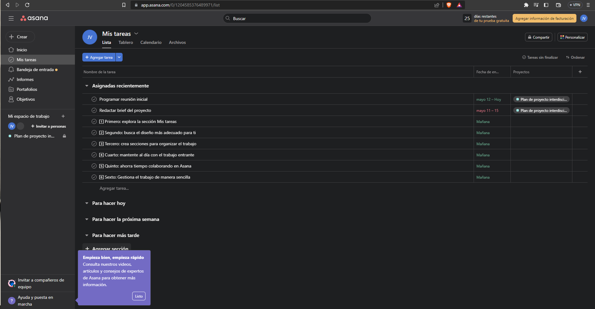

| Contenido | |
|---|---|
| Propósito de la aplicacion | Proceso del registro |
| Video de registro (Auxiliar) | Evidencia de registro |
Asana es una plataforma de gestión de proyectos y tareas diseñada para mejorar la productividad y la eficiencia en el trabajo en equipo. Su propósito principal es ayudar a los equipos a organizar, dar seguimiento y colaborar en proyectos de manera efectiva. Con Asana, los usuarios pueden crear y organizar tareas, asignar responsabilidades, establecer fechas límite y dar seguimiento al progreso. Además, ofrece herramientas de comunicación integradas para facilitar la colaboración en tiempo real. Asana se utiliza para la planificación de proyectos, el seguimiento del progreso y la comunicación efectiva, con el objetivo de optimizar el trabajo en equipo y lograr resultados exitosos.
Para registrarte en Asana, deberas:
En este video se explica de manera mas detallada del uso de la Aplicacion
Esta es mi evidencia.
